Software
The Software part of the Positioning Engine Web Console's status panel shows a range of information about the QPE and the project file that it is running. The information provided will help you to get a quick understanding of the QPE's performance. This section will go through the different indicators in this section and how to use the action buttons associated with them (if applicable).
Current Key
The Current Key row shows the project key (or license key) for this QPE. The project key allows the QPE to fetch the relevant data from the Quuppa Customer Portal as needed.
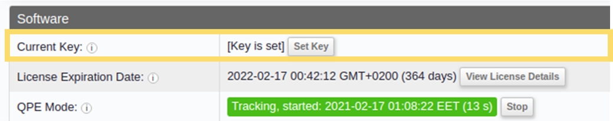
By clicking on the Set Key button in the Current Key row, you can set a new project key or change the project key for this project. This will open a new page, where you can enter the project key (or license key) that you want to submit, along with the project password if it has been enabled in the Quuppa Customer Portal. Once you are done, click on the Submit button at the bottom of the page.
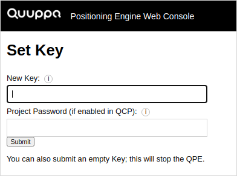
The Web Console retrieves this information from the QPE using the Get Positioning Engine Information API method.
License Expiration Date
The License Expiration Date row shows the expiration date of the licence. The QPE needs a valid license to run and this row will help you to assess whether action is needed to update your license in the near future. It will also help you to troubleshoot why the system has stopped running, as you can easily see whether it is a licensing issue.
For more information about the license, you can click the View License Details button. This will open a new page called Current License Details.
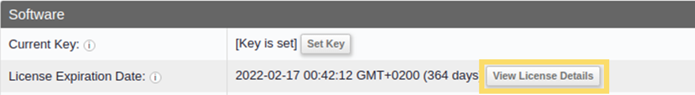
On the Current License Details page, you will be able access information such as:
- The UUID (unique ID number) for the license
- The start date for the license
- The expiration date for the licence, the trial period for the license (if applicable) and any additional optional modules that are in use (e.g. the Offline Module)
- Information about the licence type and whether it is perpetual or not
- The maximum number of tags that can be followed by the system
- The Maximum offline time interval (hours), i.e. the
maximum length of time that the system can continue running without a
successful sync with the Quuppa Customer Portal. By default, this is 48
hours. Note: If a longer period is required, consider purchasing the Quuppa Offline Module that enables the system to remain offline indefinitely. For more information, contact your Quuppa representative or Quuppa support at support@quuppa.com.
- Any additional notes that have been made for the license
- The version number for the license
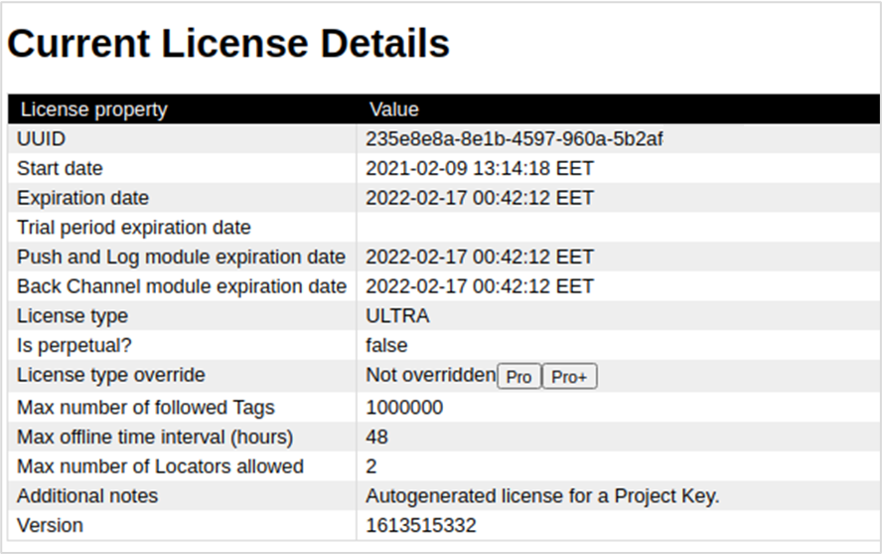
If you need assistance renewing your license or would like more information about the available Quuppa licenses, please contact your Quuppa Sales representative or your Quuppa Sales Engineer.
The Web Console retrieves this information from the QPE using the Get Positioning Engine Information API method.
QPE Mode
The QPE Mode row shows the state that the QPE is currently in. The selected mode will affect how the QPE can be used and what features are currently available (e.g. the QPE needs to be in deployment mode if you want to identify and focus the Locators in the project).
The QPE Mode options are:
- Stopped - The QPE is not running in any mode.
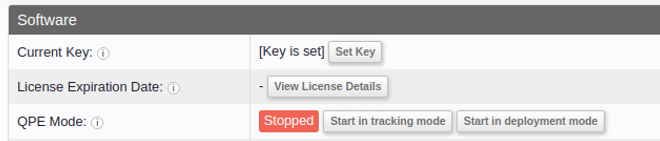
- Deployment mode - This mode is used for deploying the system, e.g. if you
need to identify or focus a Locator, the system needs to be in deployment mode.
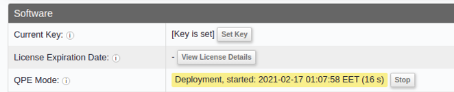
- Tracking mode - This mode is the state in which the QPE is running and
tracking tags (or other trackable devices). Once the system is up and running,
the QPE should be in tracking mode.
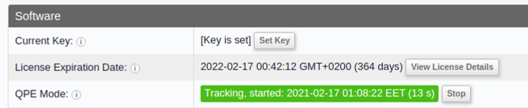
Note: You can also assess what mode the QPE is running in from the Locator indicator light. If the Locators show a static blue light, they are in tracking mode. However, if they show a blue blinking light, they are in deployment mode. If this does not correspond with the information in the Positioning Engine Web Console window, check the Locator connections. For more on the indicator light options, see the Q17 Locator Indicator Light section in the Q17 User Manual.
To change the QPE Mode, use the buttons available in the Web Console row to trigger the desired action:
- Stop - to stop the QPE from running in tracking mode (only available if the QPE is in either tracking or deployment mode already)
- Start in tracking mode - to start the QPE in tracking mode (only available if the QPE is not yet running in any mode)
- Start in deployment mode - to start the QPE in deployment mode (only available if the QPE is not yet running in any mode)
The Web Console retrieves this information from the QPE using the Get Positioning Engine Information API. The action buttons use the Set QPE Mode API method.
QPE Version
The QPE Version row shows the software version that this QPE is running. For the best performance, we always recommend that you run the latest available version of the Quuppa software package. When you update the QPE software, make sure that you also update all of your other Quuppa software (e.g. Quuppa Site Planner and Quuppa Data Player).
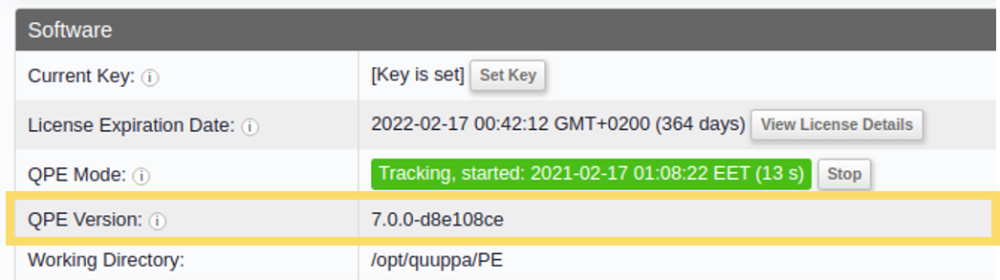
You can download the latest software package from the Quuppa Customer Portal by clicking here. For additional instructions, please refer to the Update the QPE Software section of this manual.
The Web Console retrieves this information from the QPE using the Get Positioning Engine Information API method.
Working Directory
The Working Directory row displays the directory that the QPE uses for file processing, e.g. storing the project file.
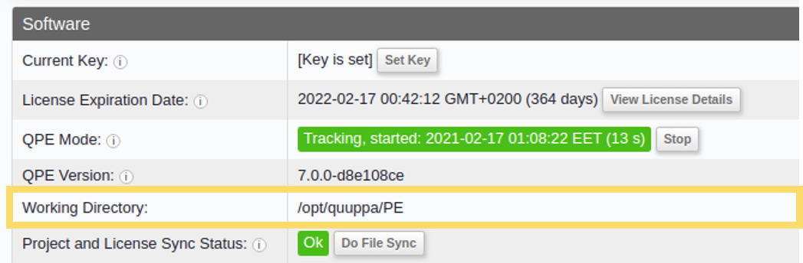
The Web Console retrieves this information from the QPE using the Get Positioning Engine Information API method.
Project and License Sync Status
The Project and License Sync Status row shows the status of the mandatory project file and license synchronisations with the Quuppa Customer Portal, enabling you to assess the health of your system. The QPE will automatically perform synchronisations with the Quuppa Customer Portal periodically.
- If the status is OK then all of the necessary files have been successfully synchronised with the Quuppa Customer Portal.
- If the synchronisation has failed, this row will show an error, and after 48 hours of the system being offline, the QPE will stop running (unless the Offline Module has been enabled).
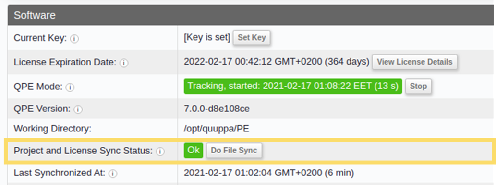
The Do File Sync button in this row allows you to manually start the synchronisation process. This is useful if for instance you have recently updated the project file and want the QPE to access the new file immediately. Once the synchronisation has been successfully completed, the row should show the status OK.
The Web Console retrieves this information from the QPE using the Get Positioning Engine Information API method.
Last Synchronized At
The Last Synchronized At row shows a time stamp for when the QPE was last able to successfully synchronise the project and license file with the Quuppa Customer Portal. If the QPE is experiencing connection problems with the Quuppa Customer Portal, this row will help you troubleshoot when the issues started.
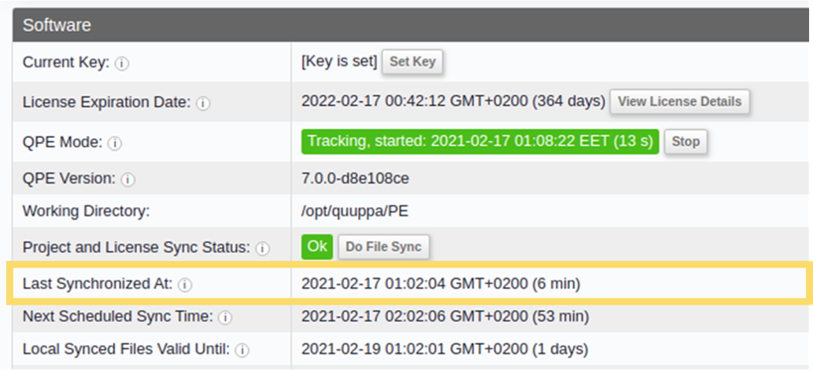
The Web Console retrieves this information from the QPE using the Get Positioning Engine Information API method.
Next scheduled Sync Time
The Next Scheduled Sync Time row shows when the QPE will next attempt a project and license file synchronisation with the Quuppa Customer Portal.
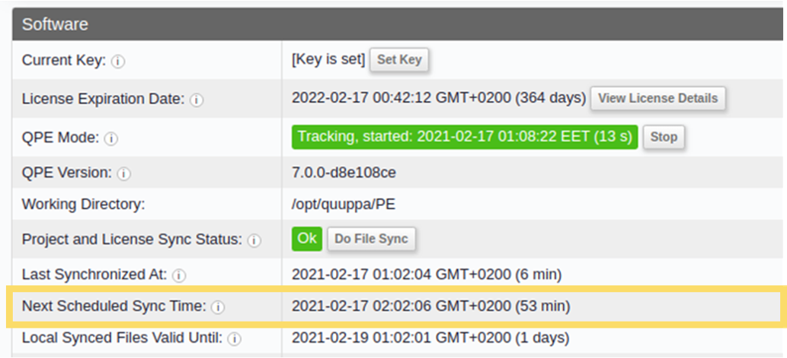
If you would like to start a synchronisation sooner (e.g. if you have just updated the project file or recently upgraded the license type), you can do so by using the Do File Sync button in the Project and License Sync Status row. For more information, please see the Project and License Sync Status section.
The Web Console retrieves this information from the QPE using the Get Positioning Engine Information API method.
Local Synced Files Valid Until
The Local Synced Files Valid Until row shows until when the QPE will continue to run if it is not able to successfully synchronise the project and license files with the Quuppa Customer Portal again. This will help you to assess how long you have until your system stops running if you, for example run into some connectivity issues on site, or if you know that your Quuppa license has recently expired.
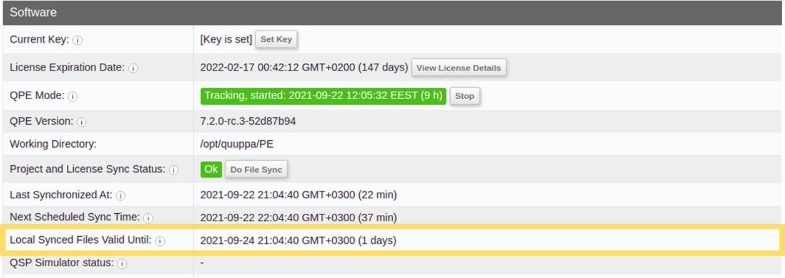
The Web Console retrieves this information from the QPE using the Get Positioning Engine Information API method.
QSP Simulator Status
The QSP Simulator Status row displays the current Quuppa System Simulator (QSS) status, e.g. if the QSS is still starting up the row will show that the QSS is initialising or if it's already up and running, simulating data and sending it to the QPE it will show that it's simulating. When using simulated data for the QPE, this row is a useful indicator to validate that the simulation is running as expected.
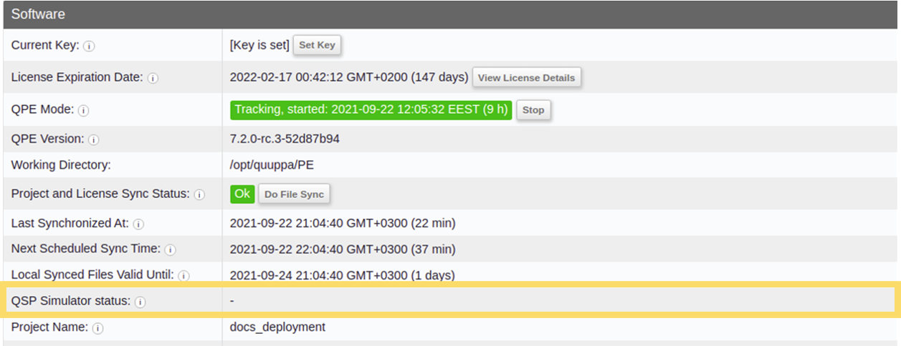
The Web Console retrieves this information from the QPE using the Get Positioning Engine Information API method.
Project Name
The Project Name row displays the name of the project running in the QPE, as it was set when creating the project file in the Quuppa Site Planner application. This will help you identify which project you are currently running on this QPE, which is particularly useful if you manage multiple projects on multiple sites.
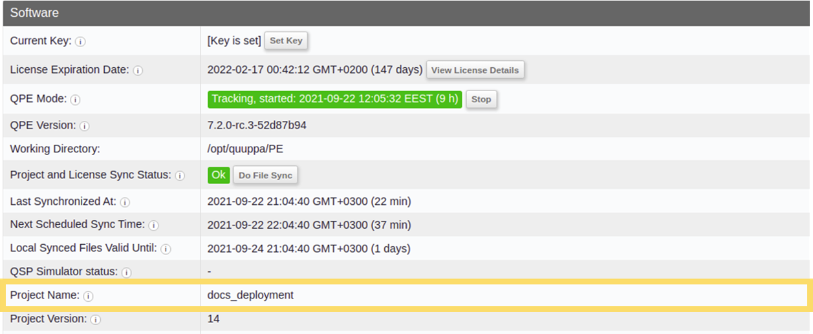
The Web Console retrieves this information from the QPE using the Get Positioning Engine Information API method.
Project Version
The Project Version row displays a project version number for the project file currently being run by the QPE.
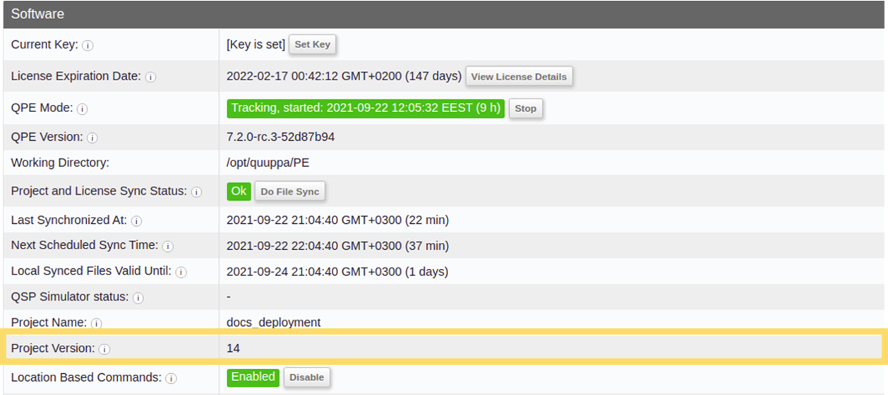
The Web Console retrieves this information from the QPE using the Get Positioning Engine Information API method.
Location Based Commands
The Location Based Commands row displays the status of the project's location based commands. These can be disabled for the project file as needed using the Quuppa Site Planner (for more details, see the Create Location-Based Temporary Commands section in the QSP User Manual). Enabling location based commands can, for example, improve tag battery lifetimes as the tag can be commanded to transmit at a lower Tx Rate when it's in an area that we aren't interested in (e.g. a storage unit).
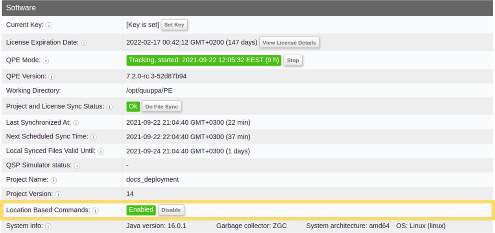
The Web Console retrieves this information from the QPE using the Get Positioning Engine Information API method.
System Info
The System info row displays information about the server machine running the QPE. For example:
- Java version
- Garbage collector version
- System architecture details
- Operating system
These details will help you assess when a system update could be beneficial for optimising QPE performance.
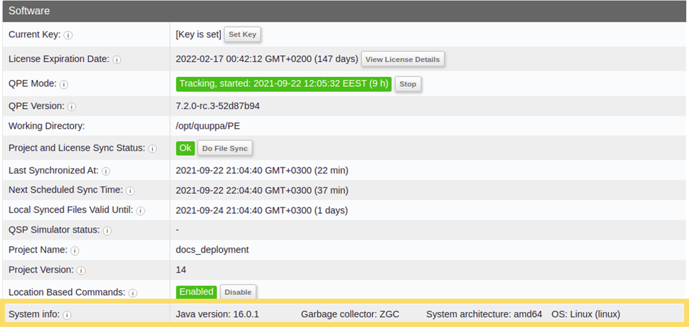
The Web Console retrieves this information from the QPE using the Get Positioning Engine Information API method.